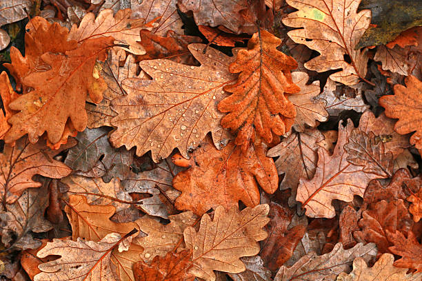
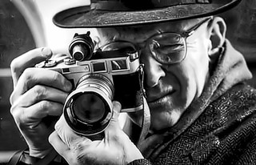
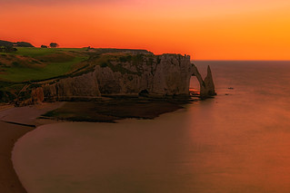
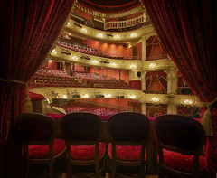
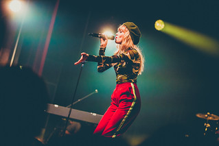

Parce que "The Truman Show" est un de mes films préférés. J'aime le scénario, il peut nous faire réfléchir sur notre société, où télévision et réseaux sociaux sont omniprésent. L'ayant vu une bonne dizaine de fois il me fait toujours autant d'effet. Jim Carrey incarne aussi à merveille bien le personnage "manipulé" du début à la fin, le héros de sa propre "téléréalité".
Je serais "le marimba"
Parce qu'étudiante au conservatoire en classe de percussions depuis l'école primaire, j'ai pu connaître et jouer sur les instruments de cette grande famille. Celui que je préfére le plus est le marimba. Je l'apprécie par son son, sa beauté mais aussi sa douceur. Si j'avais le moyen d'en avoir plusieurs chez moi je n'hésiterai pas une seule seconde !

Je serais "l'Automne"
Parce que je suis née au mois de Novembre. J'aime cette saison car on y voit de nombreuses couleurs. La couleur des feuilles sur les arbres varient entre jaune, rouge et orange. Les feuilles au sol forment comme des immenses tapis naturel, et l'odeur de l'humidité, de la pluie, des cheminés rendent cette période chaleureuse malgré le froid et la grisaille.

Je serais "Henri Cartier Bresson"
Parce que je m'intéresse beaucoup à la photographie, à l'image, et particulièrement à la photographie en noir et blanc. Je trouve que malgré l'absence de couleur elles nous apportent beaucoup plus d'émotion ou autant d'émotion qu'une photo en couleur. Mon photographe préféré reste de loin Henri Cartier Bresson, grand photographe du XXème siècle.

Je serais "la Normandie"
Parce que la Normandie n'est pas très loin d'où j'habite, seulement 2 ou 3 heures, dès que j'en ai l'occasion j'y vais avec ma famille. C'est une région de France que je ne connaissais pas avant 2020. Elle m'a beaucoup charmé par ses grandes falaises, ses grandes plages, et sa nature me fascine. C'est également un lieu d'histoire et de mémoire de notre XXème siècle.

Je serais "le théâtre"
Parce que le théâtre est autant divertissant que le cinéma pour moi. En particulier les pièces comiques. Je passe régulièrement mon temps au théatre durant les vacances ou les fêtes. Ce sont de très bon moment de détente et de diverissement que je passe seul ou accompagné.

Je serais "Angèle van Laeken"
Parce que j'aime beaucoup sa voix, son style et ses chansons et à chaque sortie d'album j'écoute ses musiques en boucle. Elle incarne, pour moi, une des meilleures chanteuse de pop que je connaisse aujourd'hui et je ne pourrai cesser de l'écouter.